solips老师色彩课
网址：BV1Ui421Y7i8
思维导图：
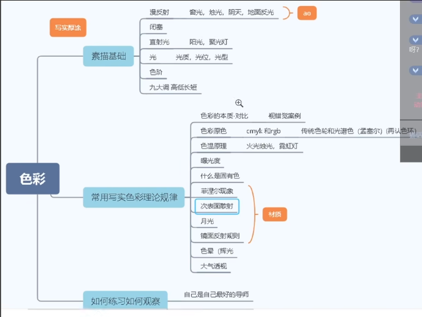
一 . 素描基础
1 .
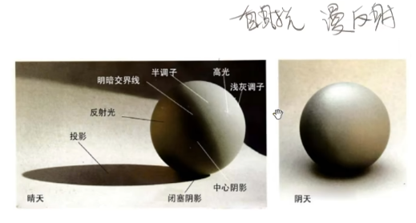
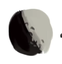
卫星看月球无明暗交界线后反光。
为什么明暗交界线信息量最丰富，它可以把表面的材质，表面的凹凸起伏大程度的表现出来。
阴天光不是平行光，是从四面八方反射过来的。大概有一个朝向，它的明暗交界线非常柔和。
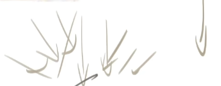
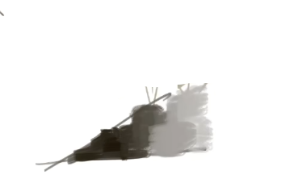
闭塞就是物体相距较近形成的一个夹角。然后慢慢扩散出去。
它是因为光从外面，经过无数道反射，然后消散在这个夹缝中。
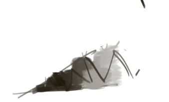
形成一个光进不去的极黑的夹角。这也就是AO（环境光遮蔽）。
漫反射：
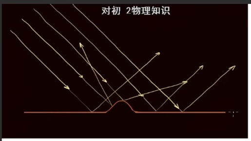
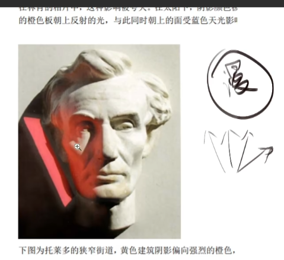
阴天光的核心就是闭塞，漫反射，柔光，弱调子
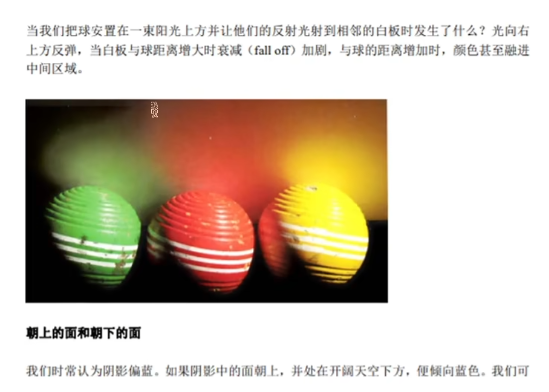
太阳本来是直射光，打到云上就被散射了，变成漫反射了。然后打到这个人身上，打到这个人身上，又是因为漫反射的特征它才可以进到这种无规律的夹角中，才会导致各种各样夹角出现这种特征。
线的本质之一是闭塞。
线承载的功能有的时候是轮廓。
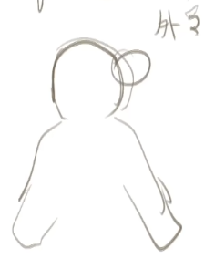
e.g.人的外轮廓
2 .
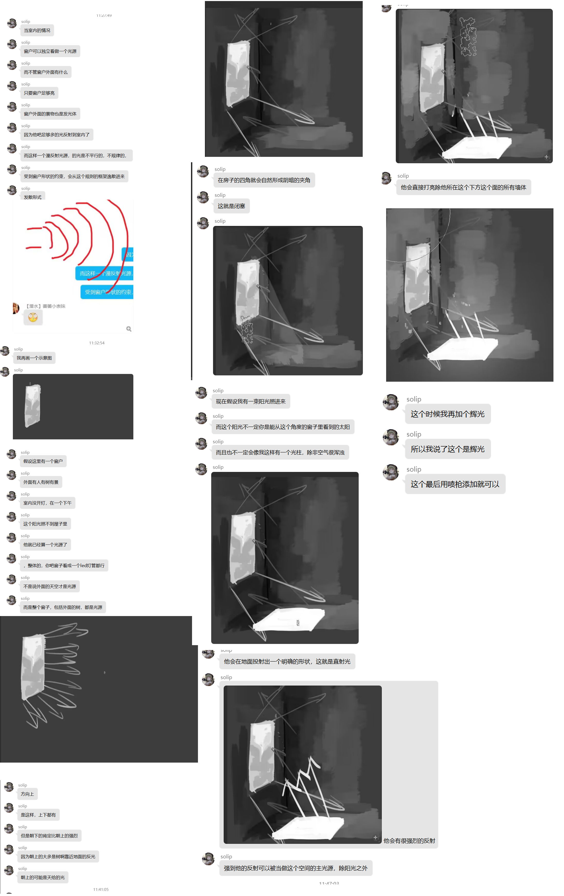
3 .
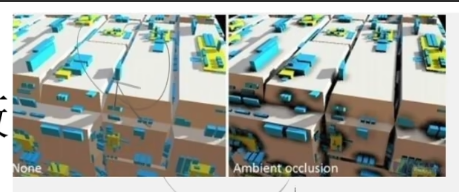
左边没有开AO，右边开了。
4 . 色阶
用两到三个色阶去练习素描。
先二分
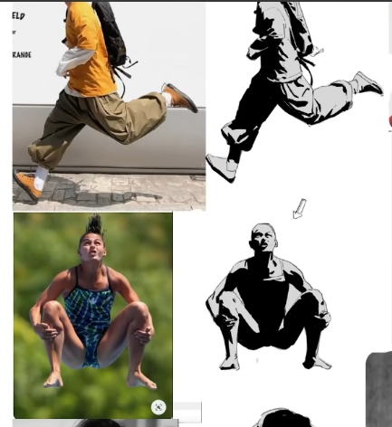
然后锁定不透明度，细化。
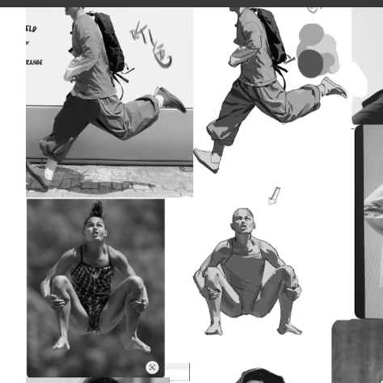
5 . 高低长短调
高调子就是：整个画面平均值，明度平均值比较亮是高调子。
低调子不是说画面中不能有特别亮的颜色。只是说平均值哈。
长调子：它的画面的明暗起伏变化比较大，波动比较大。比如说可以找到明度为10的颜色，明度为100的颜色，跨度比较大。
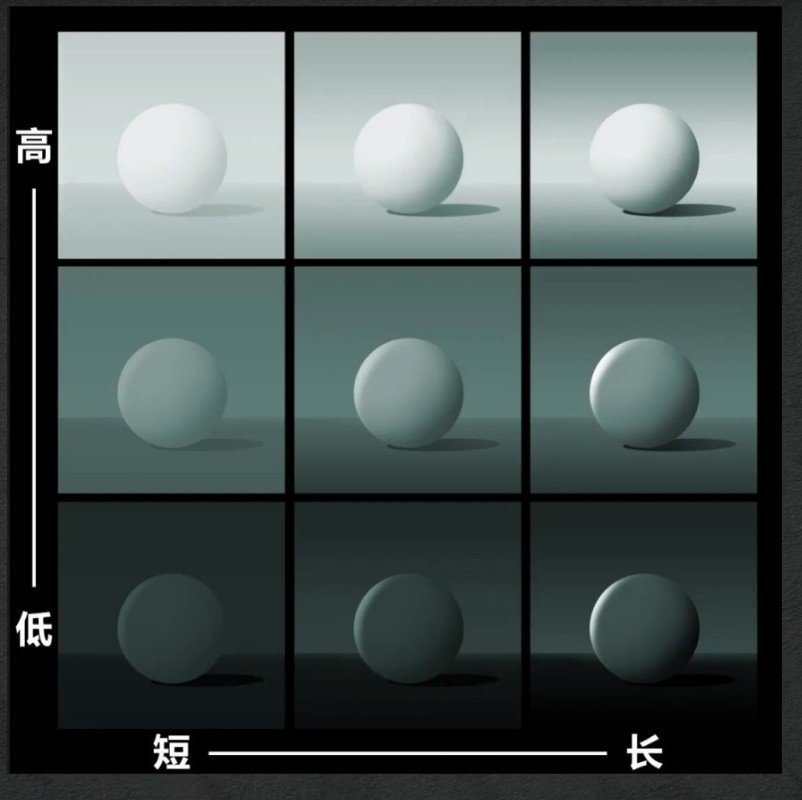

上图四个象限分别为：
高短 | 低短
高长 | 中短
索师喜欢画低短调。
二 . 颜色
1 . 色彩的本质是对比，不存在绝对色感。
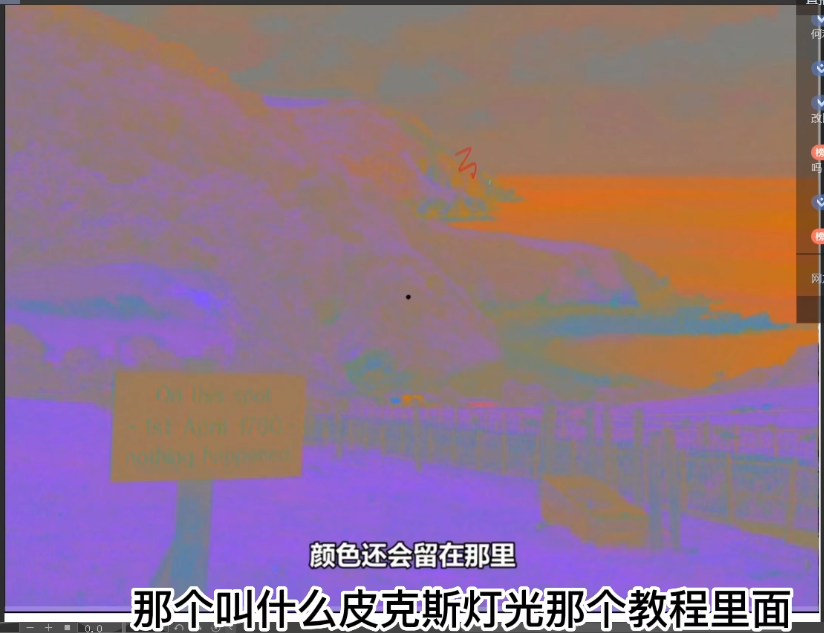
2 . CMYK 与 RGB
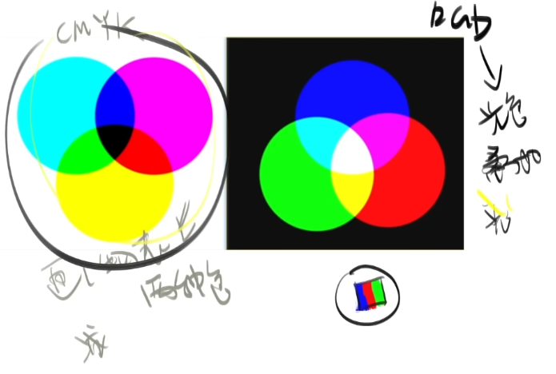
3 . 色轮
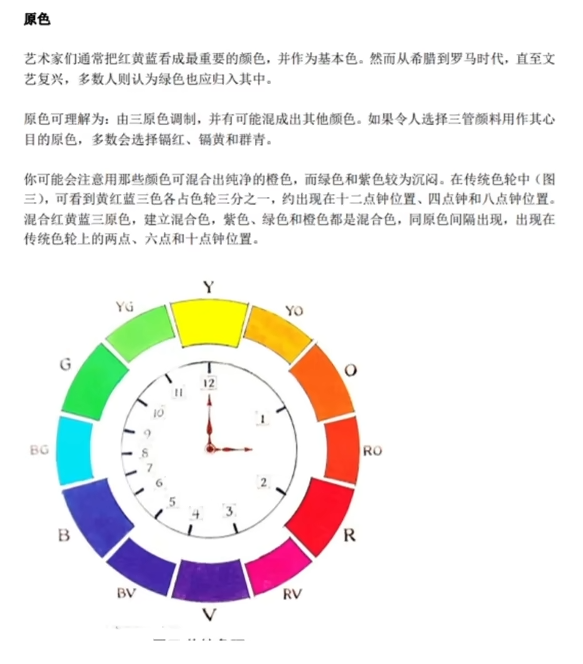
上为传统色轮，下为光学色轮：
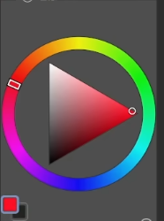
4 .
鸦想查的资料：
人眼看一种颜色，看一个地方，如果不动的话，久了之后，它从一个视锥细胞对一种颜色的敏感度就会降低，你越看这个艳色，越看越不艳，越看越灰，灰到一定程度后，你再看别的地方，它就会形成它的补色。
就是说你的视锥细胞在你无意之间，把那些艳的颜色中加入它的对比，它的互补色导致它变灰了。
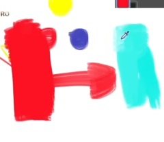
比如说你看后面一个红色横幅，看了10分钟，突然你转到旁边的白墙，你发现这个墙上竟然有青色的影子。==>视锥细胞造成。
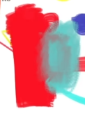
这两个颜色1:1混合是 50%中性灰。
5 .孟赛尔色彩空间
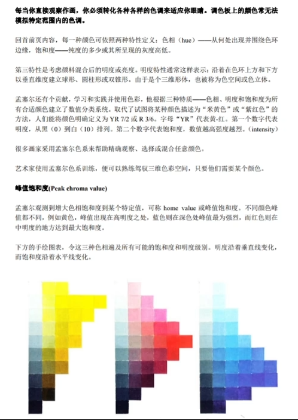
百分百黄色在人眼中相当于 同一行最左边的白色方块那么白。
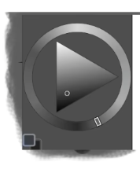
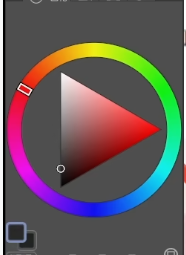
黄-》最亮
红-》中
蓝-》最暗
应用：
肤色藏色。
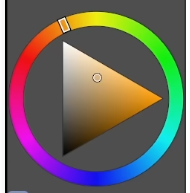
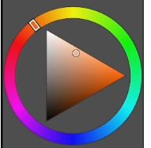
红色选稍微亮一点明度。
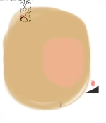
6 . 正确画色彩方式，你要同时兼顾这三个数据（色相，明度，饱和度）的变化。只要涉及到明度的变化，色相和饱和度一起变。
（1）如果只拉明度：
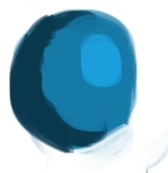
（2）如果色相有变化：
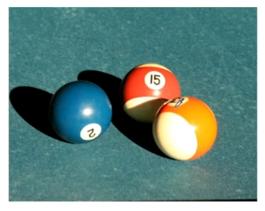
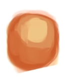
一个球，亮部往黄色走。
7 . 怎么让高光显得更亮。
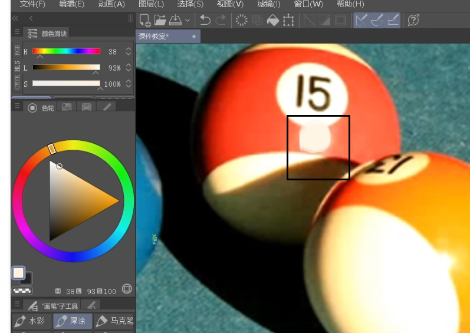
加它的对面的颜色：
青色：
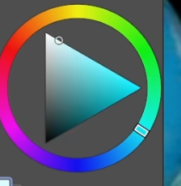
(鸦疑问：why？)
8 .
1:54:50 后的都没怎么记笔记，因为看不懂啊。
线性减淡全部是光效图层。
9 .
菲涅尔
次表面反射
2:05:05我 要努力看懂
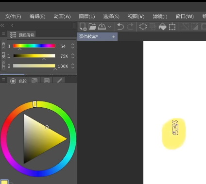
为啥当L为73%的时候，S是100%，但是取色圆圈在三角形边长中心。
镜面反射
材质
步骤：
固有色